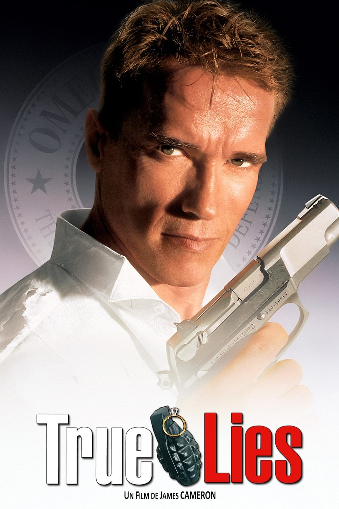
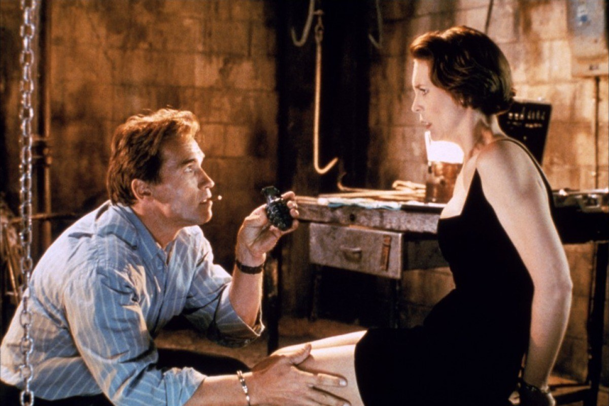
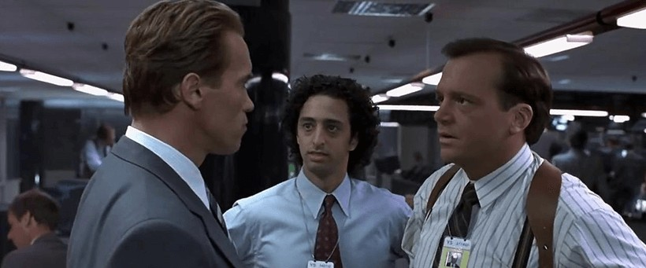

J'avais 12 ans quand j'ai découvert True Lies.
Je savais déjà que c'était le remake de La Totale !, un film que je ne verrais que quelques années plus tard. Et quand on commence par True Lies, avec Arnold Schwarzenegger devant la caméra et James Cameron aux commandes, La Totale ! paraît un peu fade.
La cassette, c'était mon grand-père qui l'avait enregistrée sur Canal+.
Ce qui m'a marqué, ce sont les séquences d'action. On sent un réalisateur qui s'est fait plaisir, et qui veut qu'on s'en mette plein les yeux, quitte à tomber dans l'exagération. La scène de l'avion de chasse est totalement irréaliste, mais tellement jouissive.
Et quand je le revois aujourd'hui, rien n'a changé. C'est un film d'action comme on n'en fait plus, et c'est bien dommage.
Ce soir, on retrouve Harry Tasker : espion de l'extrême, mari presque ordinaire.

L'affiche de True Lies
True Lies, sorti aux États-Unis le 15 juillet 1994, est écrit et réalisé par James Cameron. Le film dure 2 h 21.
Arnold Schwarzenegger y joue Harry Tasker, un agent secret qui mène une double vie. Pour sa femme Helen, jouée par Jamie Lee Curtis, il est un simple vendeur d'ordinateurs. À ses côtés, Tom Arnold joue son partenaire Gib, Bill Paxton un vendeur de voitures d'occasion, Tia Carrere une mystérieuse antiquaire, Art Malik le chef des terroristes, et Charlton Heston leur patron.
Le scénario est tiré de la comédie française La Totale !, sortie en 1991.
C'est une production de Lightstorm Entertainment, distribuée par la Fox, avec une musique de Brad Fiedel. Avec un budget estimé entre 100 et 120 millions de dollars, c'est le premier film de l'histoire à dépasser les 100 millions de coût. Il rapportera environ 379 millions de dollars dans le monde.
Il sera nommé à l'Oscar des meilleurs effets visuels.
True Lies est le premier film de Lightstorm Entertainment distribué dans le cadre du gros contrat que James Cameron a signé avec la Fox. C'est aussi la première grosse production de Digital Domain, la société d'effets visuels qu'il a cofondée.
Le budget est estimé entre 100 et 120 millions de dollars. Le film est le premier à franchir la barre des 100 millions de coût de production. Le tournage dure sept mois.
Les décors sont spectaculaires : le manoir de Rosecliff pour la scène de tango du début, et la salle de bal du Millennium Biltmore Hotel, à Los Angeles, pour la danse finale.
Pendant le tournage de la poursuite à cheval, Schwarzenegger raconte qu'une perche de caméra a effrayé le cheval, tout près d'un vide de 27 mètres. Il a glissé de sa selle avant qu'un cascadeur ne le rattrape.
Cameron reprend l'idée de La Totale !, mais avec beaucoup plus d'action. Il glisse même un clin d'œil à l'original : Schwarzenegger parle français dans une scène.
Le film obtiendra une nomination à l'Oscar des meilleurs effets visuels.
Et dix ans plus tard, le scénario fera l'objet d'un procès : la justice française donnera raison à un scénariste, Lucien Lambert, qui accusait La Totale ! d'avoir copié son scénario Émilie, écrit en 1981.

Arnold Schwarzenegger (Harry Tasker) et Jamie Lee Curtis (Helen Tasker)
Harry Tasker travaille pour Omega Sector, une agence ultra-secrète de lutte antiterroriste du gouvernement américain. Pour sa femme Helen et sa fille Dana, il est un modeste vendeur de matériel informatique, souvent en déplacement.
Lors d'une soirée en Suisse, Harry s'approche de Juno Skinner, la marchande d'art d'un milliardaire. Elle est aussi payée par Crimson Jihad, une organisation terroriste dirigée par Salim Abu Aziz. Harry se fait passer pour un entrepreneur du monde de l'art, mais le groupe le repère. Et on essaie de le tuer.
Pendant ce temps, à la maison, une autre inquiétude gagne Harry. Il surprend Helen en train de fixer un rendez-vous secret avec un certain Simon. Soupçonnant une liaison, il utilise les moyens de l'agence pour enquêter sur sa propre femme.
D'un côté, des terroristes qui menacent de faire exploser des bombes nucléaires dans de grandes villes. De l'autre, une femme qui lui cache quelque chose.
Le film mélange ces deux intrigues, l'une qui menace le monde et l'autre qui menace un couple.
True Lies est un film qui refuse de choisir. C'est un film d'action, une comédie et une histoire de couple, et Cameron mélange les trois sans complexe.
L'action est le cœur du film. Poursuite à cheval, pont détruit, avion de chasse en plein centre-ville : Cameron en met toujours un peu plus, quitte à tutoyer l'absurde. Les effets, signés Digital Domain, lui valent une nomination à l'Oscar.
Mais le film ne tient pas que par les explosions. La comédie repose beaucoup sur le couple Schwarzenegger–Jamie Lee Curtis, qui remporte un Golden Globe pour ce rôle.
À sa sortie, les critiques sont partagées : 77 % d'avis positifs sur Rotten Tomatoes. Roger Ebert salue les cascades et les effets, mais trouve l'intrigue « de pure forme ». Le public, lui, adore : le film termine troisième au box-office mondial de 1994, derrière Le Roi Lion et Forrest Gump.
Et puis il y a le revers de la médaille. Le film a été critiqué pour sa représentation des personnages du Moyen-Orient et de ses personnages féminins, et l'Indonésie l'a interdit en salles.
Ce qui reste aujourd'hui, c'est un spectacle d'une générosité folle, qui ne ressemble à aucun autre.

Arnold Schwarzenegger (Harry Tasker) et Tom Arnold (Albert « Gib » Gibson)
True Lies n'a pourtant rien d'un échec. En 1994, c'est le troisième plus gros succès de l'année.
Mais quand on parle de James Cameron aujourd'hui, on cite Terminator, Aliens, Titanic, Avatar. True Lies, lui, passe souvent au second plan.
Plusieurs choses l'expliquent. D'abord, son sujet a mal vieilli. Dès 1997, une suite est envisagée, avec le trio de départ. Le scénario est même écrit en 2001. Puis viennent les attentats du 11 septembre. Cameron déclare que le terrorisme n'est plus quelque chose qu'on peut prendre aussi à la légère, et le projet est abandonné. Jamie Lee Curtis dira en 2019 qu'on ne pourrait plus faire un autre True Lies après le 11 septembre.
Il y a aussi la polémique sur sa représentation du Moyen-Orient. Et un procès autour des droits du scénario, perdu en appel à Paris en 2004.
Les tentatives pour le faire revivre n'ont pas aidé. La série télé de CBS, lancée en mars 2023, a été annulée deux mois plus tard. Et le Blu-ray 4K sorti en 2024 a été critiqué pour sa remasterisation par intelligence artificielle.
Alors oui, le film a été déclassé, mais pas oublié. Il est juste devenu un film qu'on n'ose plus refaire.
Parce que des films comme True Lies, on n'en fait plus.
C'est un film d'action où tout est plus grand que nature. Un budget de plus de 100 millions de dollars à l'époque, des effets qui ont valu une nomination à l'Oscar, et un réalisateur qui veut que tu en aies pour ton argent. La scène de l'avion de chasse est totalement irréaliste, mais c'est justement ce qui la rend jouissive.
Mais on le redécouvre aussi pour autre chose que l'action. Pour Jamie Lee Curtis, Golden Globe de la meilleure actrice dans une comédie, qui tient tête à Schwarzenegger. Pour l'humour de Tom Arnold. Pour un film qui ose mélanger espionnage, comédie et histoire de couple, sans jamais se prendre trop au sérieux.
Et pour un détail : Schwarzenegger y parle français, un clin d'œil à La Totale !, le film qui a tout lancé.
True Lies est sorti en cassette VHS aux États-Unis en janvier 1995. Plus de trente ans plus tard, il suffit d'appuyer sur lecture pour retrouver ce plaisir-là.
True Lies, c'est Schwarzenegger au sommet de sa forme, James Cameron qui se lâche, et Jamie Lee Curtis qui vole la vedette.
C'est un film qui a failli avoir une suite, qu'on a voulu faire revivre en série, et qui est resté unique.
J'avais 12 ans quand mon grand-père a enregistré cette cassette sur Canal+, et le plaisir est resté le même.
Des films d'action comme celui-là, on n'en fait plus. Alors relançons-le.
La cassette est dans le lecteur. On rembobine.
Titre original
True Lies
Pays
États-Unis
Genre
Action · Comédie · Espionnage
Durée
141 min
Producteur
Lightstorm Entertainment · 20th Century Fox
Avec aussi
Tom Arnold · Bill Paxton · Tia Carrere · Charlton Heston
D'après
La Totale ! (Claude Zidi, 1991)
Note
Enregistré par mon grand-père sur Canal+
SOMEDAY — S3 EP. 09